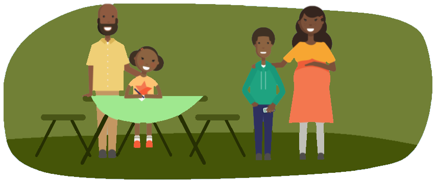

Поради батькам старшокласників
- Необхідно, щоб ви, батьки, побачили, наскільки важлива для вашої дитини проблема входження в новий колектив, і надали йому психологічну підтримку.
- В цьому віці вкрай небажано втручатися у взаємини дитини з однолітками, приходити в школу або з'ясовувати стосунки з батьками інших учнів (виняток становлять лише крайні випадки, коли у вас є підстави для серйозних побоювань).
- Якщо ви помічаєте, що ваша дитина стала більш дратівливою з причини неуспішності (або більш похмурою і апатичною), ніж раніше, то повинні допомогти йому справитися з труднощами в навчанні. Для цього, насамперед, треба з'ясувати, з якими саме труднощами зіткнувся учень, які предмети найважче даються. Потім постаратися пояснити, що вимоги до нього зросли і педагоги оцінюють його за новими критеріями. Потрібно разом з дитиною проаналізувати ті зауваження, які роблять педагоги, і сформулювати нові параметри оцінки успішності, уточнивши, яким умовам повинні відповідати його письмові і усні роботи, реферати, доповіді. Можливо, для цього знадобиться консультація вчителя (бажано, щоб її отримав сам школяр, а не ви). Потрібно допомогти дитині виконати кілька завдань згідно зі встановленими правилами.
- Нерідко зустрічається у 10 класі проблема — яскраво виражене бажання відпочити після напруженого дев'ятого і перед випускним одинадцятим класом. Коли дорослі бачать, що дитина остаточно поринула у своє життя і не займається ні навчанням, ні допомогою по дому, вони намагаються впливати на неї критикою й докорами, що найчастіше виявляється марним. Для того щоб старшокласник не віддалявся від дорослих, потрібно донести до нього свої побоювання у звичайній розмові, пояснити, що саме в поведінці дитини викликає занепокоєння.
- У старших класах школярі проводять все більше часу поза домом, пізно повертаються, рідше, ніж раніше, запрошують друзів до себе. Батьки повинні пояснити дитині, що вони хвилюються за неї, але ні в якому разі не висувати необґрунтованих вимог: «Завжди бути вдома в 20 годин і крапка». Будь-яка вимога має бути розумною і обґрунтованою.
- У 10 класі школяр повинен остаточно визначитися, чи буде він вступати до вузу після закінчення школи. Треба допомогти йому сформулювати конкретні кроки, які слід зробити для вступу, і почати готуватися до іспитів. Саме у 10 класі такі заняття будуть своєчасними, адже у підлітка зараз є остання можливість змінити своє рішення.
